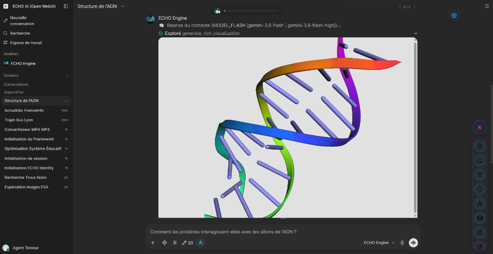

12. Édition & Visuel
Les mots ne suffisent pas toujours pour expliquer un concept ou retravailler un document de grande envergure. ECHO est capable de modifier l'interface visuelle (HUD) de votre écran pour y afficher des diagrammes ou de véritables éditeurs interactifs.
1. Intelligence Visuelle (Schémas et Graphiques)

Si vous travaillez sur une architecture complexe, un arbre généalogique ou des statistiques, demander à l'IA de l'expliquer sous forme de texte brut est souvent limitant. ECHO peut à la place générer des cartes mentales ou des diagrammes interactifs.
Ces schémas apparaissent directement au centre de votre écran. Vous pouvez zoomer, faire glisser l'interface ou interagir avec les éléments générés par l'IA pour mieux appréhender la structure des données.
2. L'Éditeur ECHO Codex (Texte et Code)

Le Codex est l'éditeur avancé d'ECHO, pensé pour la manipulation de très gros fichiers (code source, longs articles, scripts). Il vous permet d'éditer et de travailler sur des fichiers de très grosse taille.
Lorsqu'il est activé, il se déploie à l'écran comme un véritable logiciel de traitement de texte. Il vous offre de multiples avantages :
- Travail à quatre mains : L'IA peut modifier une partie spécifique du texte, et vous pouvez aussitôt cliquer dedans pour corriger une phrase à la main, tout cela dans la même fenêtre.
- Machine à remonter le temps : Le Codex sauvegarde automatiquement l'historique complet de vos versions. Si une modification proposée par l'IA ne vous convient pas, vous pouvez naviguer dans le passé et restaurer la version précédente en un clic.
- Actions rapides : Vous disposez de boutons magiques (Raccourcir, Allonger, Optimiser, Commenter) qui commandent directement l'IA pour agir sur le texte que vous avez sélectionné, sans même avoir à lui parler.
⚙️ Dossier d'Ingénierie & Spécifications
1. Visual Intelligence (universal_visual_generator.py)
Le générateur s'appuie sur le pattern Data Island. Il produit la source sous-jacente (ex: Mermaid, ECharts, Markmap) et force son injection directe dans le DOM via l'Action HUD (window.echoRenderVisual), au lieu de produire un bloc Markdown statique. Le rendu JavaScript natif assure le support de l'interactivité (drag, zoom, pan).
2. Architecture ECHO Codex
L'éditeur Codex repose sur trois piliers distincts :
- Le Moteur Git (
echo_codex_git.py) : Wrapper autour dedulwich. Chaque fichier modifié déclenche un commit silencieux, assurant l'historique (Time Machine) et permettant les diffs. L'indexation principale des métadonnées se fait dans la tableCODEX_DOCS(SQLite). - L'Interface HUD (
echo_codex_action.py) : Injection native de Monaco Editor. Elle expose l'APIwindow.echoCodex*pour autoriser le pilotage de l'éditeur depuis les réponses asynchrones du modèle. - L'Outil LLM (
echo_codex_tool.py) : 9 primitives offertes au LLM (read_codex,edit_codex,commit...). Règle proprioceptive stricte : Le modèle n'est plus notifié passivement du registre Codex (pour économiser les tokens) et DOIT utiliser l'outilquery_registryavant manipulation.